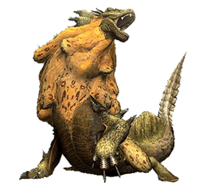

水獸
出自多玩《怪物獵人P3》數據庫
|
| |
| 海龍種：水獸 - 紫水獸 - 炎戈龍 - 凍戈龍 - 潛口龍 |
|  |
|
基本抗性（戰前必讀）
|
|
|
| |||||||
| 火 | 水 | 雷 | 冰 | 龍 | |||||
腹部 | 背部 腹部 | 頸(海綿體) | |||||||
※屬性相剋說明：◎＞○＞△＞×
※屬性相剋說明：◎＞○＞△＞×
※戰鬥前建議準備道具：
消除果（用來解除水獸帶來的潮濕狀態）
肉質
| 部位 | 斬擊 | 打擊 | 射擊 | 火 | 水 | 雷 | 冰 | 龍 | 氣絕 | 硬直 |
| 頭 | 42 | 50 | 50 | 20 | 0 | 15 | 10 | 5 | 100 | 160 |
| 頸 | 45 | 42 | 45 | 20 | 0 | 15 | 15 | 0 | 0 | 220 |
| 背部 | 30 | 45 | 30 | 30 | 0 | 10 | 10 | 5 | 0 | 200 |
| 腹部 | 50 | 45 | 40 | 25 | 0 | 10 | 15 | 0 | 0 | 200 |
| 前腳 | 30 | 35 | 25 | 15 | 0 | 10 | 15 | 0 | 0 | 左150/右150 |
| 後腳 | 35 | 30 | 30 | 15 | 0 | 10 | 10 | 0 | 0 | 左150/右150 |
| 尾巴 | 42 | 42 | 40 | 20 | 0 | 5 | 10 | 0 | 0 | 180 |
屬性攻擊效果
| 屬性 | 毒 | 麻痹 | 睡眠 | 氣絕 | 減氣 |
| 耐性值初期 | 180 | 180 | 180 | 200 | 180 |
| 耐性值上升(最大) | 120 (660) | 120 (780) | 120 (660) | 100 (600) | 150 (780) |
| 積累值減少 | 5/10秒 | 5/10秒 | 5/10秒 | 5/10秒 | 5/10秒 |
| 效果持續時間 | 60秒 | 10秒 | 60秒 | 10秒 | 120秒 |
| 傷害 | 150 | - | - | - | - |
道具效果（陷阱效果）
| 道具名 | 效果 | 備註 |
| 落穴 | ○ | 初回12秒（疲勞25秒） → 2回8秒（疲勞15秒） → 3回開始8秒（疲勞8秒） |
| 麻痹陷阱 | ○ | 初回8秒（疲勞15秒） → 2回5秒（疲勞10秒） → 3回開始5秒（疲勞5秒） |
| 閃光彈 | ○ | 初回20秒 → 2回15秒 → 3回10秒 → 4回5秒 （疲勞+10秒） |
| 音爆彈 | × | 無效 |
| 肥料彈 | ○ | 危險度★3（非常容易逃） |
| 肉類 | × | 無效 |
剝取·掉落物品
| 部位 | 回數 | 村/集會浴場下位 掉率 | 集會浴場上位 掉率 | 條件 |
| 本體 | 3 | 水袋 10% 狂走浸出物 15% 海綿質的皮 25% 水獸的鱗 30% 水獸的爪 20% | 水獸的上鱗 30% 海綿質的上皮 25% 水獸的銳爪 20% 狂走浸出物 15% 大水袋 10% | 剝取或獎勵 |
| 尾巴 | 1 | 水獸的鱗 25% 水獸的尾巴 75% | 水獸的尾巴 70% 水獸的上鱗 28% 龍玉 2% | 斷尾需要積累360的傷害值 |
| 掉落 | - | 龍之淚 75% 狂走浸出物 20% 水獸的鱗 5% | 龍之淚 38% 大顆龍淚 37% 狂走浸出物 20% 水獸的上鱗 5% | 關鍵部位破壞時掉落 |
部位破壞報酬
| 部位 | 村/集會浴場下位 掉率 | 集會浴場上位 掉率 | 破壞條件 |
| 頭 | 水獸的頭冠*1 80% 水獸的鱗*1 20% | 水獸的頭冠*1 35% 高級的頭冠*1 45% 水獸的上鱗*1 20% | 將其打硬直一次頭部就破壞了 |
| 頸 | 海綿質的皮*1 70% 狂走浸出物*1 20% 水獸的鱗*2 10% | 海綿質的上皮*1 62% 狂走浸出物*2 12% 水獸的上鱗*2 10% 海綿質的皮*2 8% 水獸的鱗*3 8% | 將其打硬直兩次頸部就破壞了 |
捕獲報酬
| 村/集會浴場下位 掉率 | 集會浴場上位 掉率 | 捕獲條件 |
| 狂走浸出物*1 32% 水袋*1 25% 水獸的爪*1 20% 水獸的鱗*2 13% 海綿質的皮*1 10% | 大水袋*1 22% 高級的頭冠*1 18% 海綿質的上皮*1 17% 水獸的銳爪*1 15% 狂走浸出物*2 15% 水獸的爪*2 10% 龍玉*1 3% | 體力%以下 體力%以下(上位) |
出現任務
|
任務種類 |
任務名稱 |
內容 |
|
水獣たちの爭い |
討伐兩頭水獸 | |
|
仁義なき抗爭 |
討伐一頭毒狗龍和一頭水獸 | |
|
山の嵐、川の氾濫 |
討伐一頭尾槌龍和一頭水獸 | |
|
強襲する孤島の水流！ |
討伐一頭水獸 | |
|
ロアルドロスを狩猟せよ！ |
討伐一頭水獸 | |
|
疾走する猛き大豬！ |
討伐一頭野豬王 | |
|
牙むく群れの長を狩れ！ |
討伐一頭狗龍王 | |
|
強襲する孤島の水流！ |
討伐一頭水獸 | |
|
ルドロスを討伐せよ！ |
討伐一頭15頭水生獸 | |
|
集え！孤島の大連続戦 |
討伐全部大型怪物 | |
|
全ては湯のため、人のため |
討伐一頭水獸 | |
|
恐るべき雌達 |
討伐10頭水生獸 | |
|
水沒林へ向かう我が主のために |
討伐一頭水獸和一頭紫水獸 |
攻擊方式
| 攻擊方式 | 備註 |
| 突進 | 爬動向獵人突進攻擊 |
| 飛撲 | 躍身使用飛撲攻擊 |
| 前進飛撲 | 先不斷修正方位朝獵人快速前進，到一定距離時接飛撲 |
| 高速突進 | 先後退一小段距離后呈遊動狀想獵人進行高速突進攻擊 |
| 連續啃咬 | 向前方連續啃咬2次 |
| 下壓 | 努力直起上身後使用下壓攻擊，壓倒地面后還會濺起水花，使人陷入潮濕異常 |
| 橫轉 | 橫著身體使用滾動攻擊 |
| 水彈 | 吐出水彈：向前吐1顆；分別往左中右方向吐3顆。打中會陷入潮濕異常 |
| 揮爪 | 揮動前爪攻擊 |
| 轉身啃咬&甩尾 | 轉身使用啃咬的同時尾部也存在甩尾判定 |
| 連續甩尾 | 尾巴左右連續甩兩下進行攻擊 |
| 亂爬 | 邊突進邊左右依次不斷吐水彈，可以連續突進3次 |
攻略·視訊
| 攻略心得 | 視訊 |
|
| |
| 海龍種：水獸 - 紫水獸 - 炎戈龍 - 凍戈龍 - 潛口龍 |